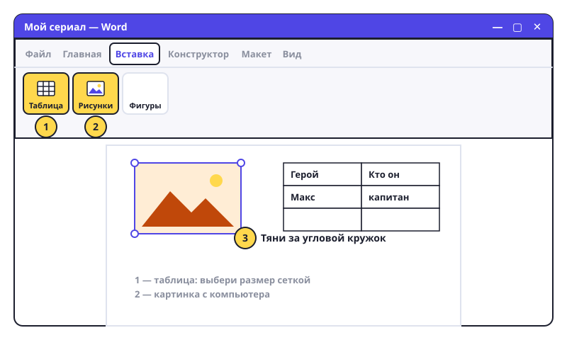

Картинки и таблицы
Доклад с картинкой смотрится в сто раз лучше. А таблица помогает всё разложить по полочкам.

Картинка
- Поставь курсор туда, где должна быть картинка.
- Вкладка «Вставка» → «Рисунки» → «Это устройство». Откроется окно с папками.
- Найди картинку (например, в «Изображения» или «Загрузки»), выдели и нажми «Вставить».
- Изменить размер: кликни на картинку — по углам появятся кружочки. Тяни за угловой кружок, чтобы картинка не растянулась.
- Подвинуть: рядом с картинкой появится кнопка «Параметры разметки» (полукруг). Выбери «Квадрат» — теперь текст обтекает картинку, и её можно таскать мышью.
- Картинка из интернета: правая кнопка на ней в браузере → «Копировать изображение», в Word — Ctrl+V.
Таблица
- «Вставка» → «Таблица». Появится сетка из квадратиков.
- Веди мышью, чтобы выбрать размер: например, 3 столбца и 4 строки. Кликни.
- Кликай в клетки и печатай. Tab — перейти в следующую клетку.
- Нужна ещё строка? Поставь курсор в последнюю клетку и нажми Tab — строка добавится сама.
- Удалить строку или столбец: правая кнопка внутри → «Удалить ячейки» / «Удалить строки».
Попробуй сам: открой «Мой сериал», вставь картинку из сериала. Ниже сделай таблицу: 2 столбца «Герой» и «Кто он», 4 строки.
Картинка растянулась и стала кривой? Ctrl+Z и тяни за угол, а не за бок.